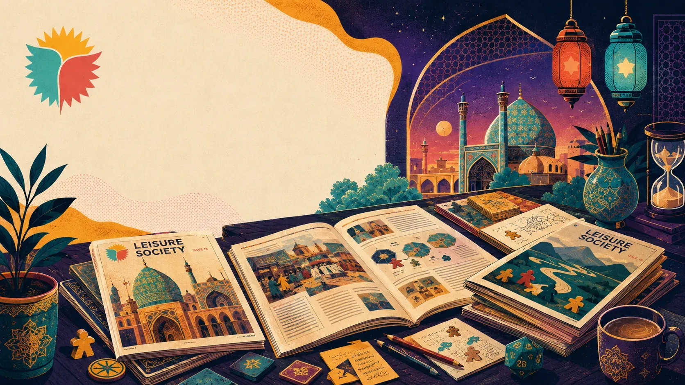
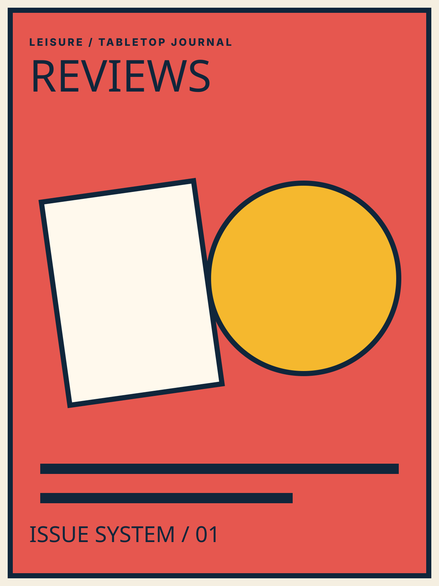
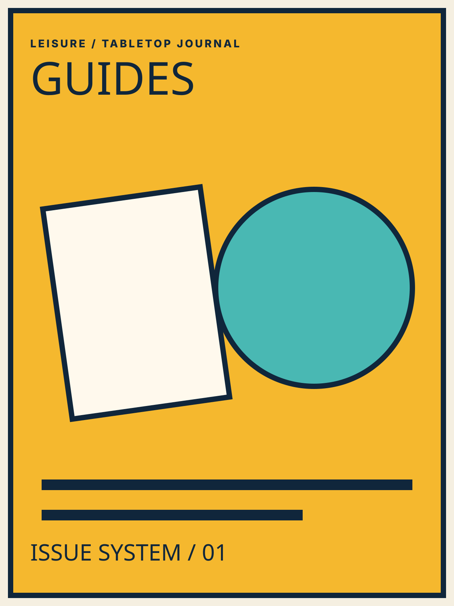
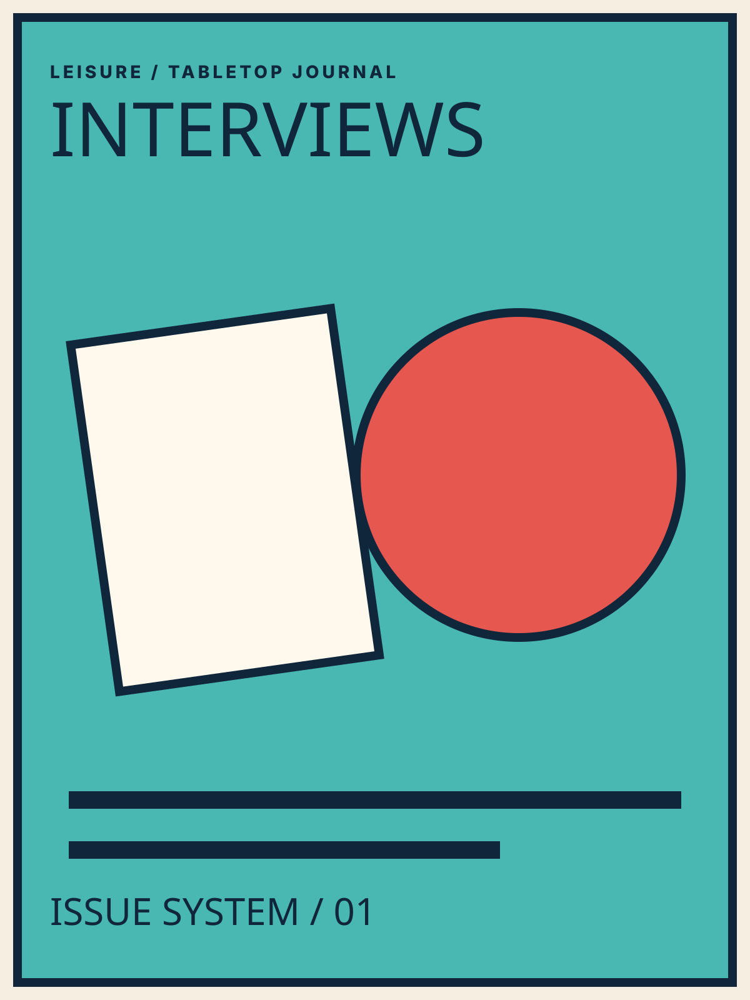
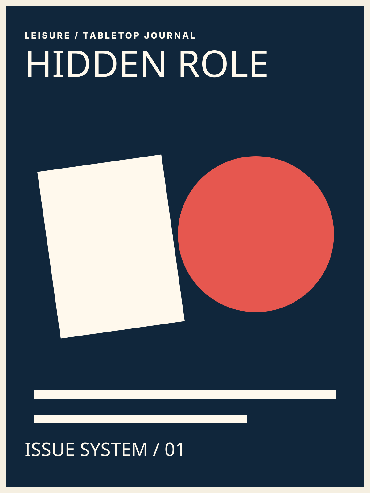
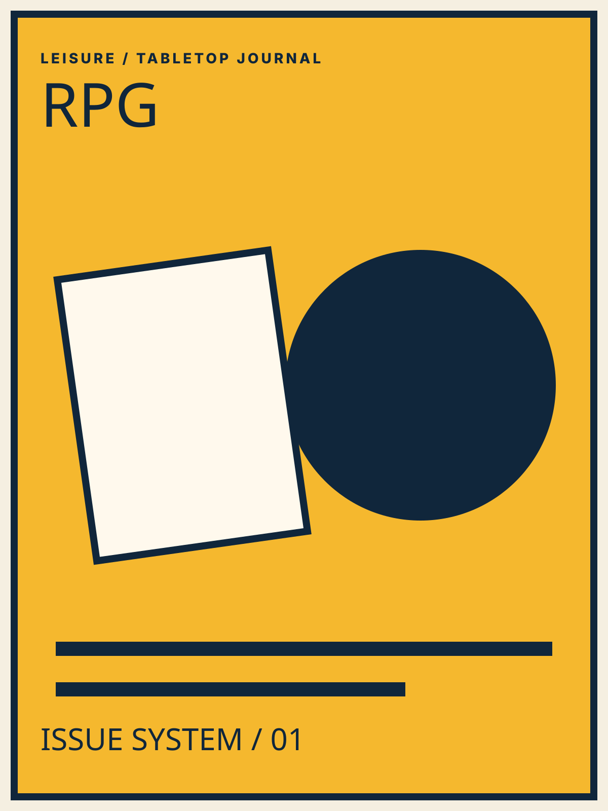
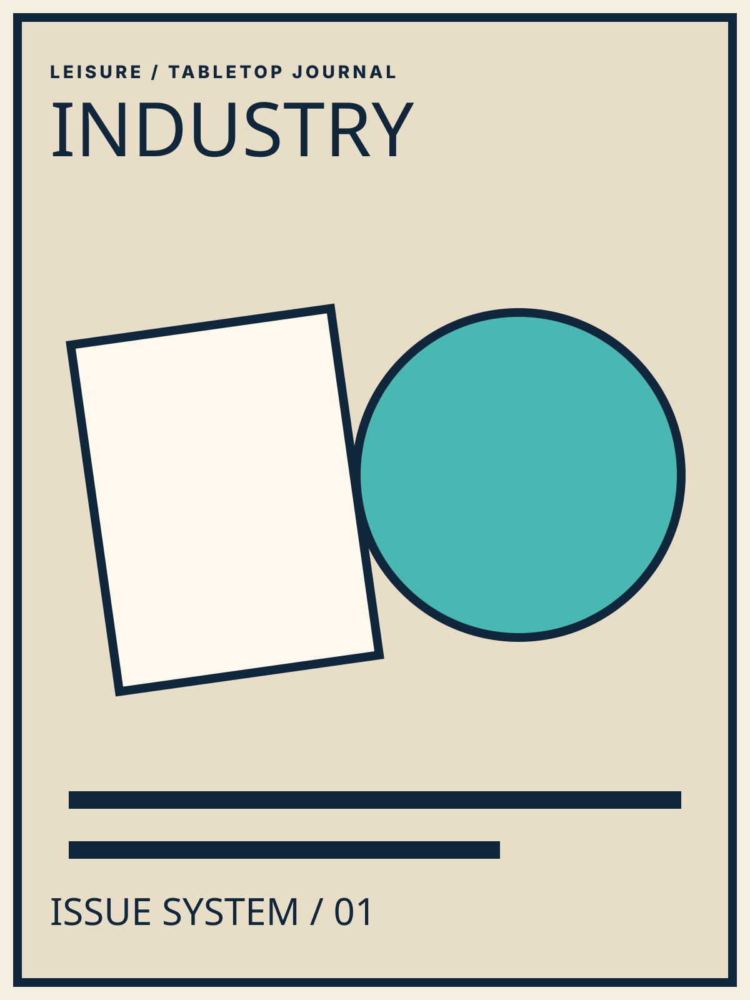
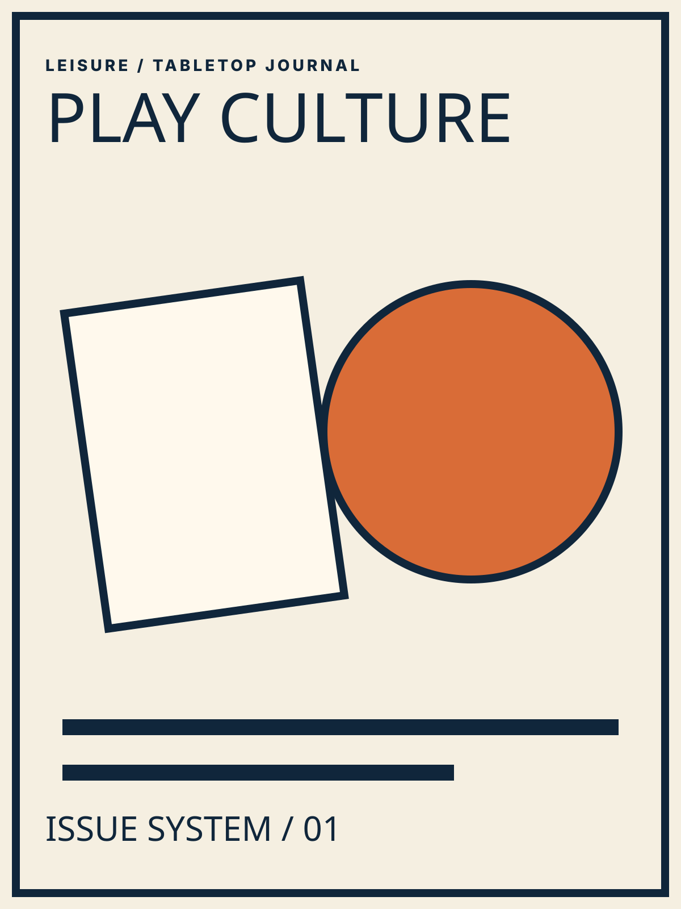

مدرن آرت؛ وقتی خودِ بازیکنها بازار را میسازند.
یک بازی مزایدهای هوشمند از Reiner Knizia که در آن ارزش آثار هنری را خود بازیکنها با خرید، فروش و زمانبندی تصمیمها میسازند.

یک بازی مزایدهای هوشمند از Reiner Knizia که در آن ارزش آثار هنری را خود بازیکنها با خرید، فروش و زمانبندی تصمیمها میسازند.
از انتخاب بازی و قواعد میز تا نقش مخفی، اتاق فرار و فرهنگ اوقات فراغت.

یک بازی مزایدهای هوشمند از Reiner Knizia که در آن ارزش آثار هنری را خود بازیکنها با خرید، فروش و زمانبندی تصمیمها میسازند.
بازی نقش مخفی برای گروهی که تقریباً همه مکان را میدانند؛ فقط جاسوس باید با سؤال و جواب بفهمد کجاست بدون اینکه هویتش لو برود.
عنوان ثبتشده در آرشیو بردگیم Leisure؛ مسابقهای سبک و پرهیاهو که بیشتر از کنترل مستقیم، روی پیشبینی زمان مناسب شرطبندی میکند.
مدخل آرشیو بردگیم Leisure برای Raiders؛ یک بازی Worker Placement با ریتم «یک کارگر بگذار، یک کارگر بردار» و تمرکز بر آمادهسازی خدمه و یورش.
یک پازل تاسی رنگی که در آن هر انتخاب ساده به تصمیمی فضایی تبدیل میشود؛ رنگ، عدد و جای قرارگیری تاسها همزمان اهمیت دارند.
مدخل آرشیو بردگیم Leisure برای بازی ساختوساز مصر باستان؛ انتخاب زمان بارگیری و حرکت کشتیها بخش اصلی رقابت است.
ترکیب طراحی انتزاعی و هویت بصری الهامگرفته از کاشیکاری پرتغالی؛ بازیای ساده برای شروع و عمیق برای بهترشدن.
بازرگانها میخواهند کالاهایشان را از دروازه ناتینگهام عبور دهند؛ بعضی کالاها قانونیاند و بعضی قاچاق، و داروغه باید تصمیم بگیرد چه کسی را بازرسی کند.

راهنمای مقدماتی Leisure به اتاق فرار بهعنوان بازی فکری و معمایی گروهی نگاه میکند که فضا، ابزار، معماها، چالشها و هدف پایانی را در یک تجربه واحد ترکیب میکند.
یک چکلیست واقعی از سایت Leisure برای انتخاب اتاق فرار بر اساس تجربه گروه، تعداد نفرات، سختی، ژانر، زمان، موقعیت، بودجه و امکانات.
یکی از پرسشهای آرشیو Leisure این است که آیا کیفیت اتاق فرار را میتوان با ترسناک بودن سنجید؛ پاسخ طراحی جدید، نگاه به کل تجربه است.

گفتوگویی با محمدتقی داستانی، موسس و مدیر انجمن اوقات فراغت اصفهان، درباره اهمیت اتاق فرار و چالشهای توسعه این حوزه.
نقش مخفی یک خانواده بزرگ از بازیهای اجتماعی است؛ مافیا فقط یکی از زیرشاخههای آن است و بازیهایی مثل Spyfall، Avalon و Coup تجربههای متفاوتی میسازند.

آرشیو سبک مافیا یک سناریوی داستانی را در سال ۱۳۲۲ قرار میدهد؛ مروانخان باید با قطار مسافربری از ساری به تهران منتقل شود.

یک ورودی روایی به دنیای نقشآفرینی؛ با فضایی الهامگرفته از Warhammer 40K که بهجای توضیح تئوری، بازیکن را مستقیم داخل نقش و تصمیم قرار میدهد.
عنوانی از آرشیو RPG Leisure که بهعنوان ورودی برای معرفی سناریوها و تجربههای مختلف نقشآفرینی حفظ شده است.

مروری بر تغییر سبک تفریح با تکنولوژی و زندگی مدرن؛ سایت Leisure بازیهای رومیزی، نقش مخفی، نقشآفرینی، اتاق فرار، روبیک و پازل را در گروه بازیهای نوپدید قرار میدهد.
مطلب Leisure نوجوانی را فرصت مناسبی برای یادگیری از طریق بازی و سرگرمی و تخلیه انرژی به شیوه سالم معرفی میکند.
یک مطلب مفهومی درباره اهمیت فعالیتهای تفریحی در زندگی پرسرعت و استفاده از زمان آزاد برای کاهش فشار و ایجاد تجربههای مثبت.
مصاحبهای درباره فراغت بهعنوان زمان انتخاب داوطلبانه و فرصت رشد؛ صفحه موضوعاتی مثل خانواده، اشتیاق و مهارتآموزی را برجسته میکند.

معرفی کتاب «فراغت و فرهنگ» اثر یوزف پیپر و نیاز به نگاه تحلیلی و فلسفی به مفهوم فراغت در کنار رویکردهای مدیریتی و برنامهریزی.
راهنمایی برای پیدا کردن فضای مناسب بازی در اصفهان؛ از گیمکافهها و دورهمیهای بردگیم تا برنامههای فرهنگی و اجتماعی.